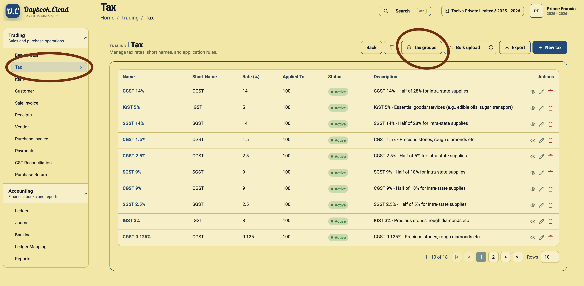
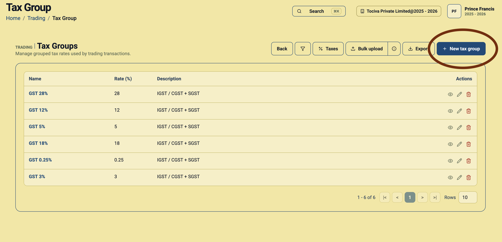
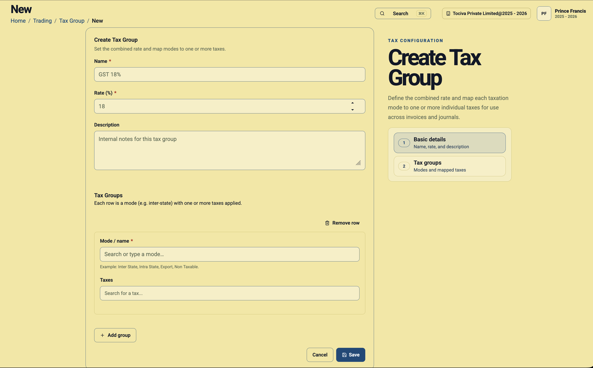

A tax group is a reusable tax setup that combines one or more individual taxes under a single rate. For example, GST 18% may need IGST 18% for inter-state customers, but CGST 9% plus SGST 9% for intra-state customers.
Use tax groups when one product can be sold under different tax systems depending on customer location, transaction type, or tax treatment.
Before you start
Create the individual taxes first. A tax group depends on existing tax records such as IGST, CGST, SGST, or Export 0%.
- Inter-state mode: Usually maps to IGST.
- Intra-state mode: Usually maps to CGST plus SGST.
- Export mode: Usually maps to Export 0% or a tax advised by your accountant.
- Non-taxable mode: Use only if your business needs a non-taxable sales treatment.
Step 1: Open Tax Groups
Go to Trading, open Tax, and click the Tax groups button. This takes you from the individual tax list to the tax group list.

Step 2: Review existing tax groups
The Tax Groups page shows the groups already created in your company. Each row has a group name, total rate, description, and action buttons.

Common groups include GST 5%, GST 12%, GST 18%, GST 28%, and special rates such as GST 0.25% or GST 3%.
Step 3: Click New tax group
Click New tax group. Daybook.Cloud opens the Create Tax Group form.
Step 4: Fill the basic details
Enter the name, total rate, and an optional description.

Example: GST 18%
- Name: GST 18%
- Rate (%): 18
- Description: IGST / CGST + SGST
Step 5: Add tax group modes
In the Tax Groups section of the form, each row represents one mode. A mode tells Daybook.Cloud which taxes to apply in a particular situation.
- Inter State: Select the IGST tax for the same total rate, such as IGST 18%.
- Intra State: Select the matching CGST and SGST taxes, such as CGST 9% and SGST 9%.
- Export: Select the export tax if this group is used for export invoices.
- Non Taxable: Select a non-taxable setup only when required.
Step 6: Add more rows when needed
Click Add group to add another mode row. For a normal GST group, you may add one row for Inter State and another row for Intra State.
Step 7: Save the tax group
After mapping all modes and taxes, click Save. The group appears in the Tax Groups list and can be reused in invoices and trading workflows.
Simple checklist
- Create individual taxes before creating tax groups.
- Use a clear group name such as GST 18%.
- Set the group rate to the full tax rate, such as 18.
- Map Inter State to IGST.
- Map Intra State to CGST plus SGST.
- Use Export or Non Taxable modes only when they apply to your business.
- Ask your accountant to review tax mappings before using the group on invoices.
If a tax group looks wrong later, open it from the Tax Groups list, review the mapped modes and taxes, and correct the setup before creating more invoices.